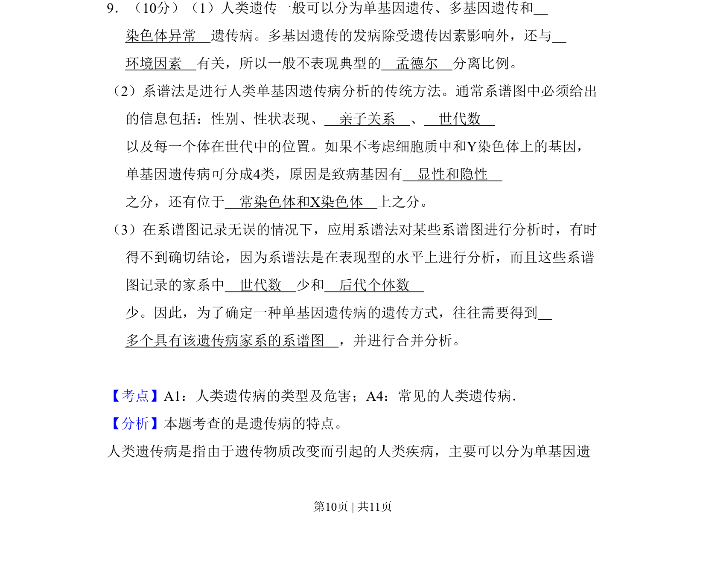
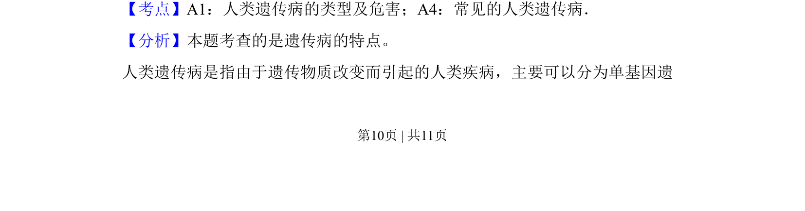
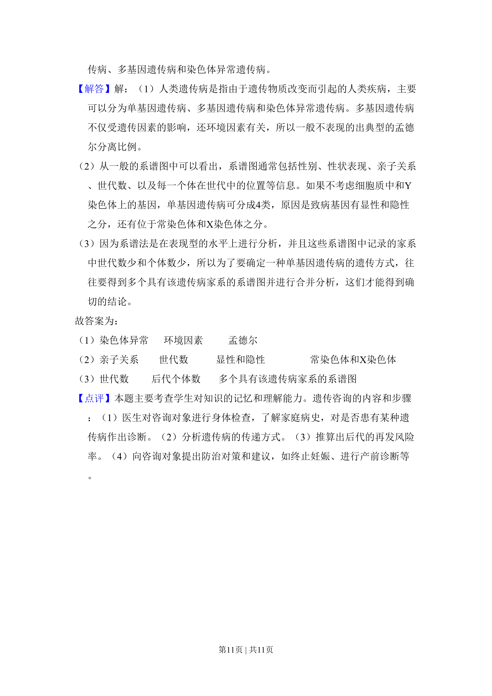

考点：人类遗传病类型 系谱分析 遗传方式判断

本题主要考查人类遗传病的类型、特点及系谱分析法，要求理解多基因遗传与环境因素的关系以及单基因遗传病的分类依据。


📄 原 PDF 第 10 页：
素材/真题/吉林/2008-2024·（吉林）生物高考真题/2009年高考生物试卷（全国卷Ⅱ）（解析卷）.pdf
9．（10分）（1）人类遗传一般可以分为单基因遗传、多基因遗传和 染色体异常 遗传病。多基因遗传的发病除受遗传因素影响外，还与 环境因素 有关，所以一般不表现典型的 孟德尔 分离比例。 （2）系谱法是进行人类单基因遗传病分析的传统方法。通常系谱图中必须给出 的信息包括：性别、性状表现、 亲子关系 、 世代数 以及每一个体在世代中的位置。如果不考虑细胞质中和Y染色体上的基因， 单基因遗传病可分成4类，原因是致病基因有 显性和隐性 之分，还有位于 常染色体和X染色体 上之分。 （3）在系谱图记录无误的情况下，应用系谱法对某些系谱图进行分析时，有时 得不到确切结论，因为系谱法是在表现型的水平上进行分析，而且这些系谱 图记录的家系中 世代数 少和 后代个体数 少。因此，为了确定一种单基因遗传病的遗传方式，往往需要得到 多个具有该遗传病家系的系谱图 ，并进行合并分析。
【考点】A1：人类遗传病的类型及危害；A4：常见的人类遗传病．菁优网版权所有 【分析】本题考查的是遗传病的特点。 人类遗传病是指由于遗传物质改变而引起的人类疾病，主要可以分为单基因遗